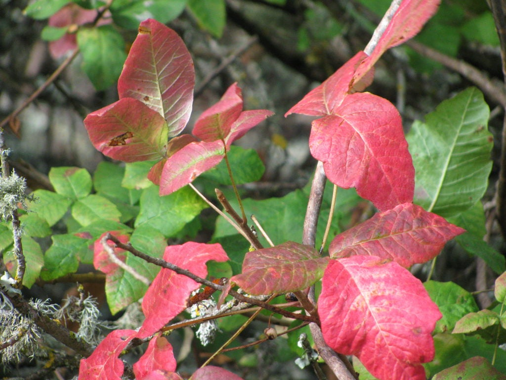
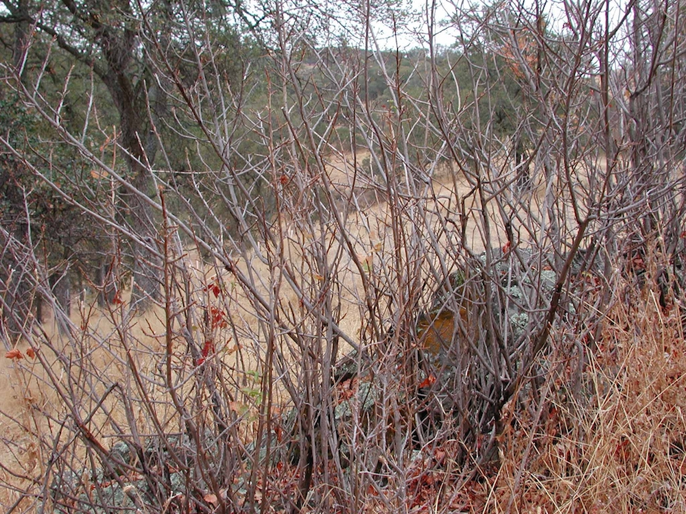

Spring

In early spring the leaves have a bold green appearance and can have small white berries. The plant emits a faint smell reminiscent of solvent. In wooded areas (pictured) the leaves will be big and leafy.
Summer

In early summer it tends to turn a dull greenish red. It can be easy to spot in contrast next to blackberries and other plant types. The leaves become waxy with the poison oil urushiol. In an open field environment (pictured) the plant tends to have smaller leaves.
Fall
In the fall the leaves turn from dull green to red, as the leaves fall off and plant becomes dormant. It may lose it's berries at this stage. Although the plant is in the process of becoming dormant, the oils that cause the rash stick around all year long.
Winter
In the winter time it can become difficult to identify. The leaves drop off and only the vines remain. The best way to identify it at this stage is to look for sticks growing straight up out of the ground with cinnamon colored bark. Although it has become dormant the plant is still infested with Urushiol and just as volatile.
Gound Cover

It can grow low to the ground on the edge of paths and clearings.
Shrub

It can grow in to bush like bunches that look very similar to other plants.
Vine

It can head up to the canopy, creating thick vines that look similar to english ivy. If you ever find firewood with vines on it be careful handling it.
Mimicry


Here it is shown mimicing low growing plants called service berry on the left, blackberry bushes in the middle and salal on the right. It can morph shape to blend in with other plants.